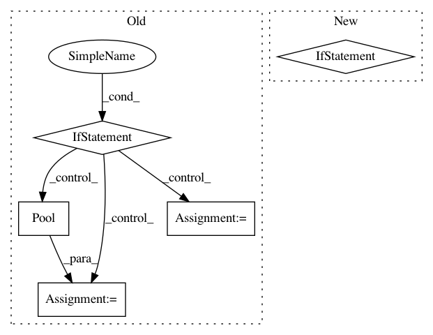

d19d3fcccc2c30dc3dbc6153a5875ba81cfbff37,nn_dataflow/Scheduling.py,Scheduling,schedule_search_per_node,#Scheduling#Any#Any#Any#,186
Before Change
for t in r:
yield t
if options.nprocesses > 1:
pool = Pool(processes=options.nprocesses)
apply_func = pool.apply_async
retrieve_func = retrieve_result()
else:
pool = None
apply_func = apply
retrieve_func = retrieve_result_st()
// Partitioned layer.
p_layer, p_batch_size, p_occ = part.part_layer(self.layer,
self.batch_size)
// Mapping strategy.
After Change
for lbs in LoopBlocking.gen_loopblocking(
nested_loop_desc, resource, self.cost, p_occ, options):
if lbs.is_valid():
top_lbs_list.append(lbs)
self.pernode_sched_cache[cache_key] = top_lbs_list
return top_lbs_list
In pattern: SUPERPATTERN
Frequency: 3
Non-data size: 5
Instances
Project Name: stanford-mast/nn_dataflow
Commit Name: d19d3fcccc2c30dc3dbc6153a5875ba81cfbff37
Time: 2017-05-10
Author: mgao12@stanford.edu
File Name: nn_dataflow/Scheduling.py
Class Name: Scheduling
Method Name: schedule_search_per_node
Project Name: EpistasisLab/tpot
Commit Name: 831f5ce7aad0b8172f965c519d0835465ecc7a12
Time: 2017-03-31
Author: weixuanf@upenn.edu
File Name: tpot/base.py
Class Name: TPOTBase
Method Name: _evaluate_individuals
Project Name: theislab/scanpy
Commit Name: d69aa1862f77db07d8aee64303fa6576701850af
Time: 2021-03-03
Author: ivirshup@gmail.com
File Name: scanpy/preprocessing/_simple.py
Class Name:
Method Name: regress_out